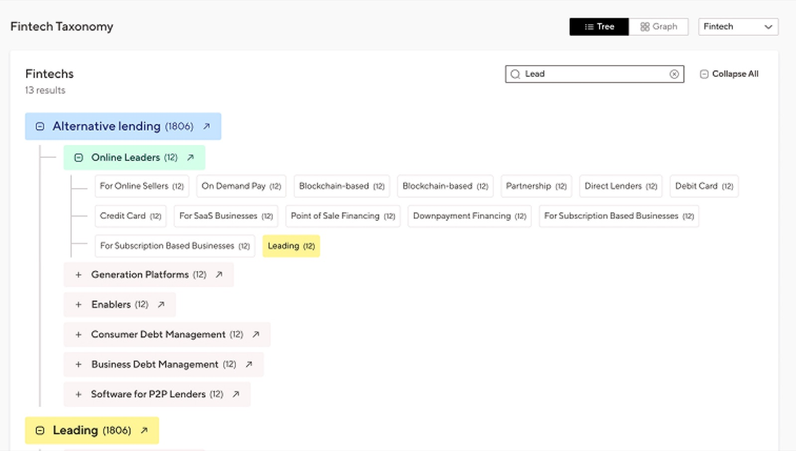
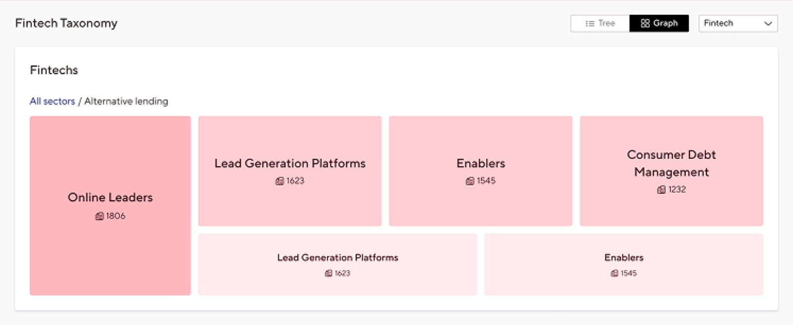
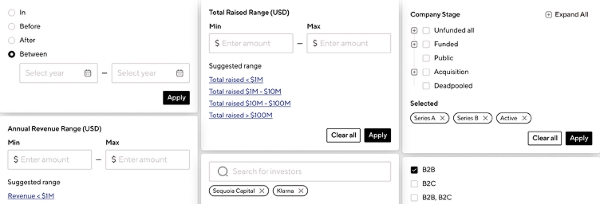
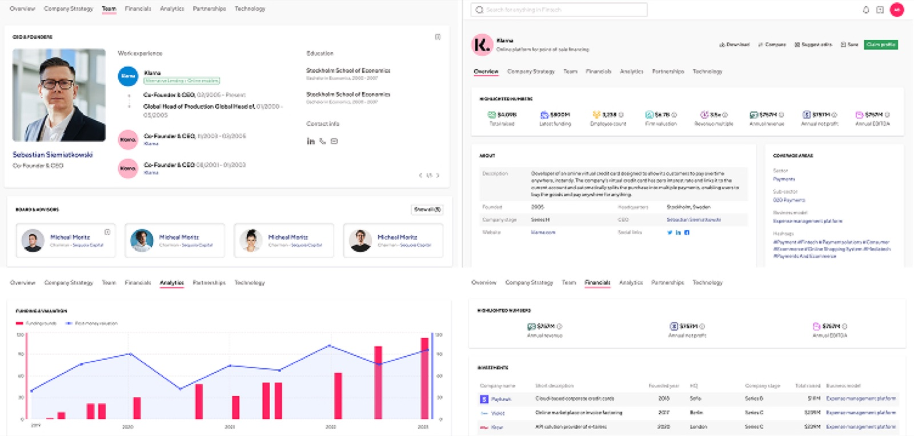

Fintech intelligence platform for Money20/20 (Ascential), structuring 67,000 startups and 25,000 investors.
View the initial portfolio version
The business problem
Money20/20 is the world's largest fintech event, owned by Ascential. The business it generates is concentrated around a few annual dates each year, with audience attention dropping off in between. TwentyFold was commissioned to extend that audience into a year-round product, a fintech intelligence platform that would keep Money20/20's investors, analysts, and corporate strategy users engaged outside the event window.
The design problem
Building a fintech intelligence platform from scratch meant three things had to work together:
- A fintech-specific taxonomy that let users navigate from broad sectors down to specific business models without getting lost.
- Search and filter had to give analysts a fast way to find exactly the companies they needed, with sorting and column controls that adapted to different user needs.
- Once a user found a company, investor, or person, the platform had to go deep. A single profile needed to surface everything an analyst or investor would need for due diligence.
Approach
I worked with one product owner against client requirements, designing feature by feature and shipping each one to real users for feedback. The platform built up over multiple releases, company, investor, and people profiles and search first, then taxonomy navigation, then save lists. The design system was built in parallel from the ground up, so every new feature could ship consistently.
Key design decisions
The brief asked for fintech categorisation. The decision was to treat the taxonomy itself as a navigable product surface, letting users drill from broad sectors (e.g. embedded finance) down to specific business models.

Search and filter had to lead. Investors and analysts came in with a known task, find companies matching specific criteria, and needed a fast path to results. The decision was to put all filter controls front and centre on Explore Fintech startups, with customisable columns for power users.

The profile is where users decide whether the platform is worth paying for. The decision was to structure each profile around the seven dimensions analysts and investors actually research in due diligence: Overview, Company Strategy, Team, Financials, Analytics, Partnerships, Technology.

Outcomes
Shipped TwentyFold as the sole designer, a B2B fintech intelligence platform for Money20/20 (Ascential) structuring 67,000 startups, 25,000 investors, and hundreds of thousands of individuals.
Client described the engagement as "a true partnership, not just a service provider relationship" and the delivery as "spot on with timelines and milestones."
Reflection
The platform holds a lot of data, that's the product's value. But in an era when users scan rather than read, density becomes a liability. If I were still on TwentyFold, the next focus would be making the same depth more progressive: showing users what they need at a glance, and letting the rest reveal itself only when they ask for it. The challenge isn't reducing the data. It's designing the path through it.